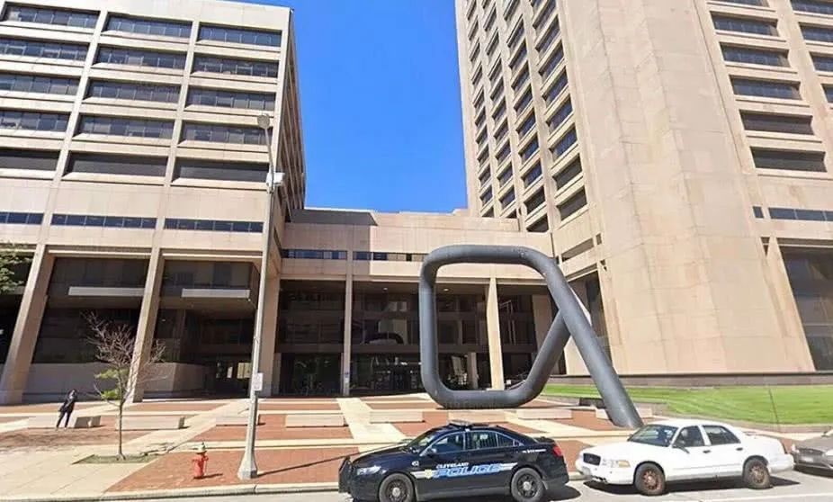

数说疫情0317：世卫呼吁更多检测，海外确诊已逾10万
原文链接 备份链接 “外防输入”已是当前疫情防控重中之重。海外累计确诊病例超过10万，世卫组织呼吁各国扩大监测范围。欧洲更多国家关闭边境 文 |《财经》数据研究员 徐进 图 |《财经》视觉中心 编辑 |** 郝洲** 一、北京重启小汤山 …

据央视新闻援引巴西媒体报道，当地时间3月16日，巴西有3所监狱同时发生越狱事件，逃亡人数分别为400人、926人及30人，共计1356人。
据悉，受疫情影响，巴西监狱系统实行了新规，有监狱原定于次日（17日）进行的放风活动被取消，囚犯进行反抗并劫持了狱警等工作人员。
在防范疫情传播方面，监狱是个特殊的地方。在美国加利福尼亚州洛杉矶县，警局正在通过提前释放囚犯等方法减少监狱人口。

巴西上千名罪犯越狱
据巴西媒体报道，当地时间16日晚，在巴西圣保罗州一所监狱，约400名囚犯集体越狱。据悉，囚犯因原定于次日（17日）进行的放风活动被取消而进行反抗，并劫持了狱警等工作人员。随后，囚犯集体逃脱，但逃脱路径及越狱的具体细节仍在调查中。
目前，当地军警及民警等已动用直升机等展开全力搜查。据报道，事发监狱是一所半开放式监狱，即囚犯可在白天自由参加生产改造活动，晚上返回囚室休息。该监狱最多可收押1640名囚犯。
另根据巴西军警发布的最新数据显示，当天下午，共有3所监狱同时发生越狱事件，逃亡人数分别为400人、926人及30人，共计1356人。自当地时间本月12日起，为防止新冠肺炎疫情蔓延到监狱，巴西监狱系统实施了一系列限制人员出入及流动的新规。当地时间16日，圣保罗法院决定在疫情期间暂时取消非紧急的审讯。
自2月底巴西出现首个确诊病例，短短半月内，新冠肺炎疫情开始在拉美地区逐渐蔓延。
巴西卫生部官员在例行发布会上宣布，截至当地时间16日16时，全国确诊新冠肺炎病例234例，比前一天增长34例，疑似病例2064例。
截至目前，上周随巴西总统博索纳罗访美的团队中，已有13人新冠病毒检测呈阳性。其中一人是巴西国家工业联合会主席罗布森·布拉加·德·安德拉德。据巴西媒体报道此人并没有乘坐总统博索纳罗的专机，而是在迈阿密的活动中会见了总统和其他官员。另一人是巴西经济部外贸和国际事务特别秘书马科斯·特洛伊乔，他们均未出现任何症状，目前在家自我隔离。
位于巴西北部的亚马孙州宣布进入长达120天的公共卫生紧急状态，该州州长要求卫生系统的工作人员停止休假并返回工作岗位。里约热内卢州州长威尔逊·维泽尔于当地时间16日宣布里约热内卢州进入紧急状态。
由于全球新冠疫情不断升级，16日，巴西圣保罗股指（IBOVESPA）开盘后暴跌12%，随即触发熔断，这是两周来巴西股市第5次触发熔断机制。
此外，巴西足协15日决定，从16日起巴西国内所有全国性足球比赛将无限期暂停。
美国多地考虑释放部分囚犯
监狱里人员密集，环境封闭，活动空间有限，利于病毒传播，因此是各国重点关注对象。
16日，据央视新闻援引英国媒体报道，英国监狱官员协会秘书长吉蓝（Gillan）表示，目前英国监狱系统已经有113名职员和75名服刑犯因出现疑似新冠病毒症状正在进行隔离，不过尚未有人确诊。他说，目前英国还没有因疫情而提前释放关押犯人的计划，但是不排除这种可能。
此前，为控制疫情，监狱暂停家属探视的政策引发囚犯不满，意大利多所监狱发生骚乱。在3月8日至9日期间，至少50名囚犯在意大利全国27个监狱骚乱中逃脱。

图片来源：看看新闻视频截图
而美国多额地方正考虑释放部分囚犯。
美国加州当地时间3月16日，洛杉矶县警局局长埃里克斯在新闻发布会上表示，虽然目前在警员和囚犯中没有确诊的新冠肺炎病例，但为防止疫情的传播，洛杉矶县警局还是采取了包括减少监狱囚犯等措施。埃里克斯同时提醒民众，由于部分囚犯被提前释放，在防疫的同时，也要注意防范犯罪。
洛杉矶县警局局长埃里克斯
埃里克斯还表示，洛杉矶县在过去一周内将逮捕人数从每天约300人减少到60人。警局正在通过提前释放囚犯等方法减少监狱人口，目前囚犯人数减少了约3.6%。
目前，洛杉矶县关押的囚犯有1.7万多人，截至2月28日已经释放出600人，估计陆续还会释放更多犯人。
据海外网报道，由于担心新冠病毒在监狱内传播开来，俄亥俄州凯霍加县的法官在上周末举行了特别听证会，试图通过达成认罪协议解决悬而未决的案件、释放囚犯、将他们软禁在家或是送回监狱。

凯霍加县司法中心（谷歌地图）
根据统计数字，凯霍加县司法中心在上周共关押有近1900名囚犯。有美媒表示，在周末的听证会之后，预计将有200到300名囚犯获释，他们都是低级别罪犯。
疫情严重的伊朗也在释放囚犯。3月9日，受新冠肺炎疫情影响，伊朗司法总监易卜拉欣·莱西表示，已经批准70000名符合条件的囚犯获得暂时释放。他表示，患有潜在疾病的囚犯将优先获释。
不容忽视的一点是，无论是囚犯被越来越多地释放，还是逮捕人数的减少，在疫情防控期间都将增加社会公共安全的风险。
来源：每日经济新闻综合自央视新闻、新华社、海外网等


推荐阅读

点击大图 |一周三次熔断！美股暴跌，只是疫情全球冲击下的冰山一角

点击大图 | 美联储的王炸加剧恐慌，只有疫苗才能拯救全球金融市场****

原文链接 备份链接 “外防输入”已是当前疫情防控重中之重。海外累计确诊病例超过10万，世卫组织呼吁各国扩大监测范围。欧洲更多国家关闭边境 文 |《财经》数据研究员 徐进 图 |《财经》视觉中心 编辑 |** 郝洲** 一、北京重启小汤山 …
原文链接 备份链接 “现在没有系统性的不平衡，我们更像是突然被流星撞击，只不过撞击我们的是病毒，不是流星” 文 |《财经》特派记者 金焱 发自华盛顿 编辑 | 苏琦 3月16日再成“黑色星期一”，全球股市又现连环熔断。3月16日美股触发 …
原文链接 备份链接 中国现有确诊病例已降至1万以下。国内已采取最严密的入境防疫检测措施。美国继续在快车道上狂奔，但基本防疫措施已经得到重视和加强 文丨《财经》数据研究员 徐进 图丨《财经》视觉中心 编辑丨郝洲 一、境外输入病例北京居首， …
原文链接 备份链接 世卫组织最新报告显示，截至欧洲中部时间9日10时（北京时间9日17时），中国以外新冠肺炎确诊病例数达到28673例，死亡686例，其中，意大利确诊病例逼近1万。 为遏制疫情蔓延，意大利总理孔特当地时间9日夜间宣布，人员 …
原文链接 备份链接 【财新网】（记者 覃建行）“截止3月5日，武汉市内监狱、公安看守所、未成年犯管教所、养老院、福利院、精神病院等特殊场所累计确诊新冠肺炎患者1795人、疑似164人。”3月7日早上，中央政法委长安剑披露了这一组最新数据。 …